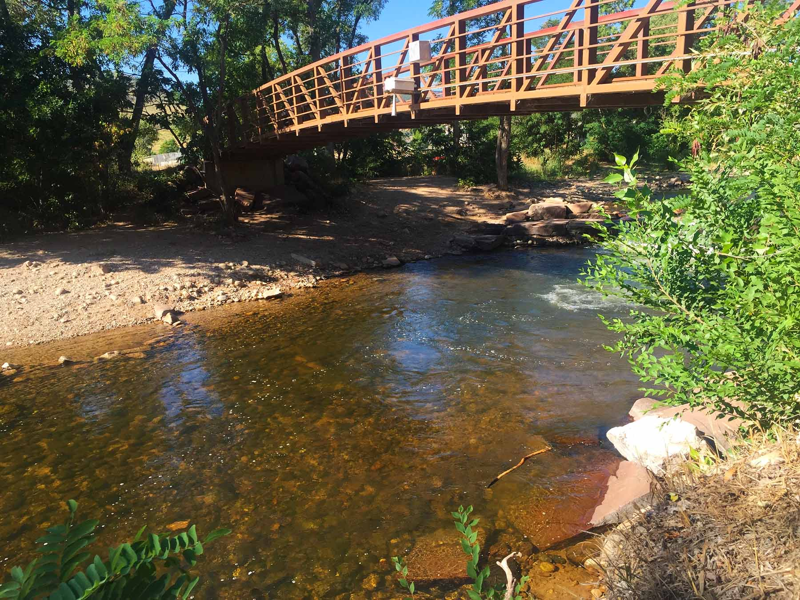
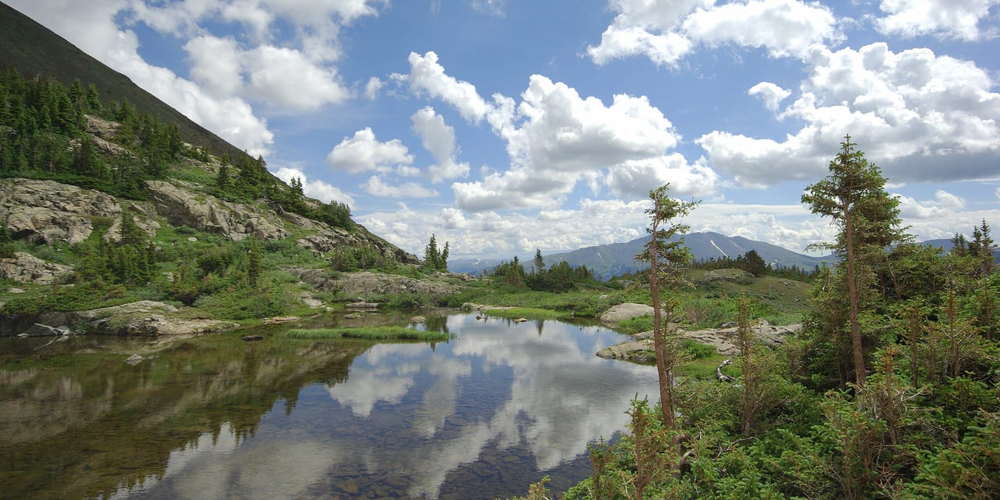
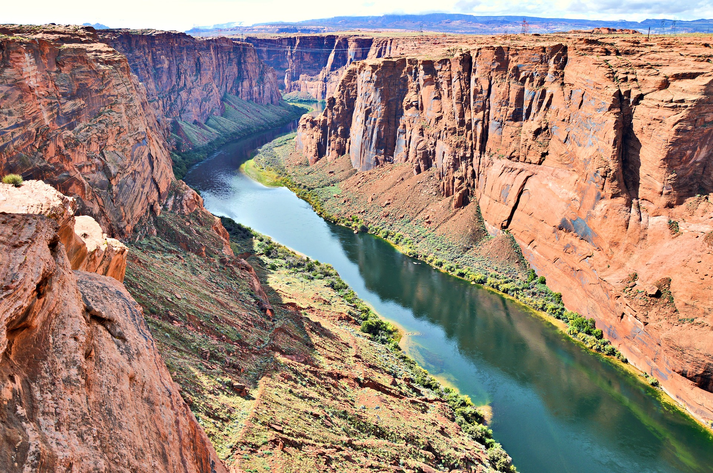

South Boulder Creek
Only 10 miles from Boulder, great dry fly action and easy access near Eldorado Canyon.

St. Vrain Creek
About 30 miles from Boulder, known for scenic canyon fishing and diverse hatches.

Blue River
Roughly 70 miles away, a classic tailwater fishery with good midge and nymph action.

Colorado River
Just under 100 miles from Boulder, big water and big fish, best floated by raft.